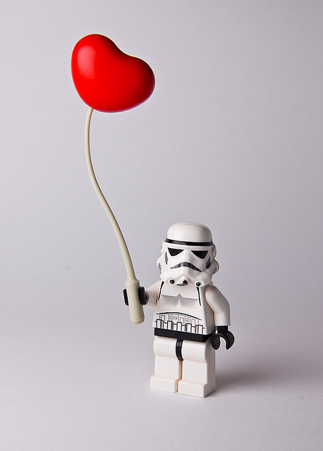
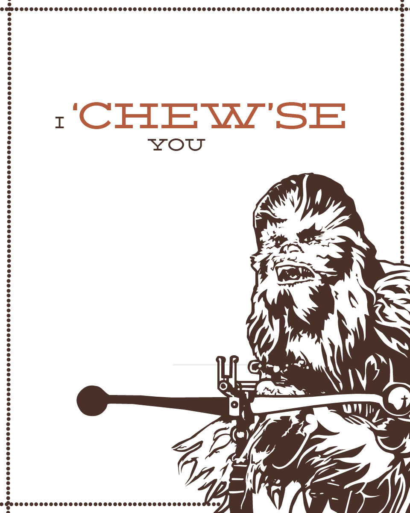
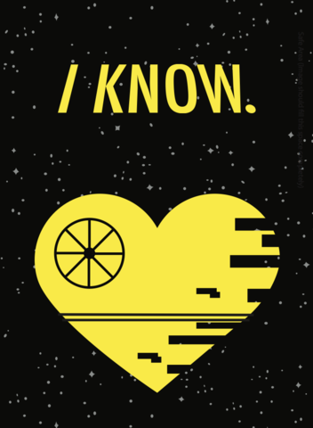

Despre Noi
Stiu ca nu iti plac lucrurile siropoase, cum este site-ul asta, dar vreau sa il ai pentru a-l putea accesa oridecateori ai nevoie de o aducere aminte a tot ceea ce insemni pentru mine.
Cand ne-am cunoscut prima data nu as fi crezut ca vom ajunge atat de departe.
Dar in primul moment in care te-am privit in ochi am avut senzatia
ca te cunosc deja de cateva secole cel putin.
Nu pot sa spun ca nu a fost putin infricosator, dar mi-am dat seama destul de repede de lucrurile pe care sunt in stare sa le fac pentru noi.


Am avut parte de multe momente frumoase impreuna. M-ai facut mai fericita decat m-a putut face cineva vreodata.
Au fost si momente grele, dar peste care am trecut fara ca iubirea noastra sa se stinga, ci dimpotriva, relatia noastra a devenit mai puternica cu trecerea timpului.
Da, ne suparam unul pe altul, ne enervam, dar stim ca "esti prost, dar esti prostul meu" si "esti tuta, dar esti tuta mea".
Cred ca impreuna facem o echipa care poate cladi lucruri extraordinare. Iar atunci cand sunt down, tu vei fi stalpul meu. Si cand tu vei fi down, eu voi fi floarea de pe stalp, care te va ajuta sa vezi lucrurile mai frumoase.
Vreau sa nu uiti ca indiferent de ce problema ai avea, eu sunt aici pentru a te asculta. Si promit sa nu te judec, sa incerc mereu sa-ti dau cel mai bun sfat
si sa fiu linistea de care ai nevoie.
Iti multumesc pentru toata sustinerea,iubirea si grija pe care mi-ai oferit-o in acesti ani.
Stii,nu?
